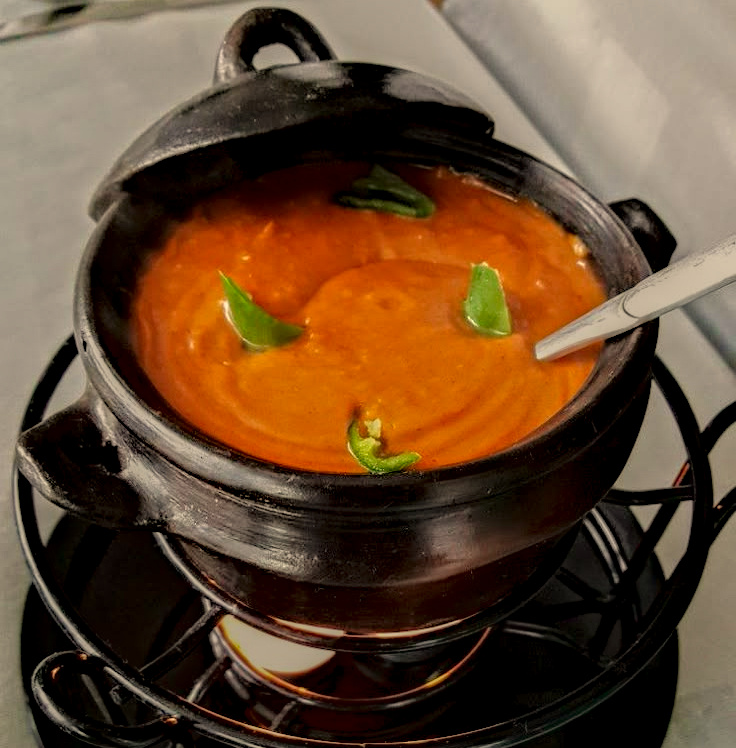

Home
Shiro

Ingredient
- 1/2 of a large onion or 1 small onion.
- 1 small tomato. *Optional*
- 1/3 of a cup of cooking oil.
-
1 tbsp of berbere. (You can skip this if you have mitin shiro AND you
don't want your shiro to be too spicy. If you don't mind the spice add
it.)
- 1 tbsp of ginger and garlic paste. *Optional*
- 1/8 tsp of cardamom. *Optional*
- 1/8 tsp of tikur azmud (black caraway seed). *Optional*
- 1/8 tsp of nech azmud (white caraway seed). *Optional*
- 2.5 cups of water.
-
white(Nech) or mitin shiro. (The amount depends on how thick you want
your shiro.)
- 1/8 tsp of mekelesha. *Optional*
- Salt to taste.
Instructions:
- In a hot pot, add ½ of a large onion or 1 small onion.
- Immediately, add finely chopped tomatoes.
-
Cook for 2-3 minutes stirring occasionally. If you chose not to add
tomatoes, add 1-2 tbsp of water so that your onions don't burn.
If you did add tomatoes, you don't need to add water. Tomatoes already
have a lot of “water” inside them.
-
Add 1/3 of a cup of cooking oil. You can choose whatever cooking oil you
like. Usually, olive oil, vegetable oil, and canola oil are
better when preparing Ethiopian food.
- Cook for 2-3 minutes stirring occasionally.
-
Add 1 tbsp of berbere. Like I mentioned above, if you're using mitin,
you can skip this BUT if you like your shiro to have a little
kick, make sure to add it. If you have nech shiro, this step is
mandatory.
- Cook for 1-2 minutes.
-
Add 1 tbsp of garlic and ginger paste and stir. Cook for 30 seconds.
-
Add 1/8 tsp of cardamom, 1/8 tsp of tikur azmud (black caraway
seed), and 1/8 tsp of nech azmud (white caraway seed) and stir. Cook for
30 seconds.
- Add 2.5 cups of water and bring the water to a boil.
-
Add shiro. The amount depends on how thick you want your shiro. I like
my shiro to be on the thicker side, so I added about 5 and ½ tbsp
of shiro. I would suggest adding 2 tbsp first then stirring; once you
see the consistency, keep adding 1 tbsp of shiro until the desired
consistency is reached.
- Cook for 3-4 minutes.
- Add 1/8 tsp of mekelesha and cook for 30 seconds.
- Add salt.